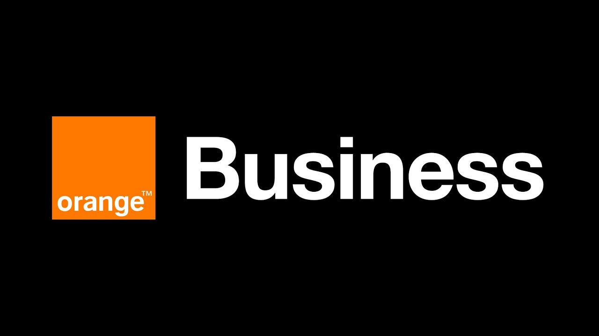
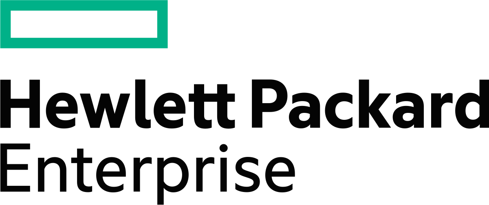
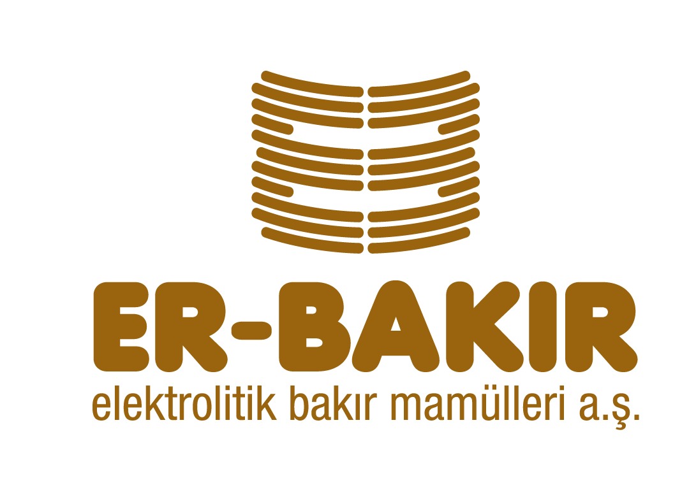

Experience Details
 Data Management Platform Admin / Framework Lead
Data Management Platform Admin / Framework Lead
Accenture Baltics
Sep 2024 – Present
Riga, Latvia
- Architected and led the implementation of a modern Databricks-based data platform to enable real-time analytics and data governance across multiple business units.
- Automated data ingestion and transformation workflows using AWS, Python, and Terraform, reducing manual effort to near zero and achieving a 90% automation rate in data pipelines.
- Established comprehensive end-to-end data governance and security frameworks with Collibra, Immuta, and Fivetran to ensure data integrity, regulatory compliance, and security.
- Led collaboration among cross-functional teams, including cloud engineering, data engineering, and DevOps, to deliver scalable and resilient solutions.
- Tech Stack: Databricks, Apache Spark, AWS, Python, Docker, Jenkins, Bitbucket, Terraform, Fivetran, Collibra, Immuta, Jira, Confluence
Senior Presales Solutions Partner
Orange Business
Nov 2023 – Aug 2024
Istanbul, Turkey
- Designed and proposed tailored cloud, security, and connectivity solutions that successfully addressed complex client challenges, leading to multiple key account wins.
- Led all presales activities, including customer workshops and solution presentations, directly contributing to the securement of multi-million dollar digital transformation projects.
- Translated complex technical requirements into clear, high-level solution architectures, simplifying decision-making for C-level executives and ensuring solutions were scalable and secure.
- Collaborated with cross-functional teams to ensure solution proposals were perfectly aligned with both client business goals and technical feasibility.
GreenLake Solution Architect
HPE
Jan 2022 – Oct 2023
Istanbul, Turkey
- Architected and delivered bespoke hybrid cloud solutions using HPE GreenLake for Private Cloud, accelerating clients' digital transformation initiatives and improving their IT agility.
- Led the design and implementation of secure, scalable cloud architectures that seamlessly integrated on-premises and public cloud environments, enabling operational efficiency and high availability.
- Acted as a trusted advisor to enterprise clients, guiding them on hybrid adoption strategies, operational models, and best practices to ensure successful migration and business continuity.
Senior Solution Manager
KoçSistem Information and Communication Services Inc.
Jul 2017 – Dec 2021
Istanbul, Turkey
- Designed and proposed customized cloud and IT outsourcing solutions (Private, Public, Hybrid), leading to the successful acquisition of multiple key enterprise accounts.
- Led presales efforts for Cloud, Managed Services, and modern platforms (Virtualization, SAP Basis, Containers), significantly increasing customer engagement and sales pipeline value.
- Directed cross-functional teams to develop and deliver winning proposals, RFP responses, and technical presentations, securing large-scale digital transformation projects and driving millions in revenue.
 Infrastructure Services Sales Specialist
Infrastructure Services Sales Specialist
IBM
May 2015 – Jun 2017
Istanbul, Turkey
- Provided presales support and designed solutions for IBM Cloud, Security, and Managed Services, contributing directly to revenue growth across public and private sector projects.
- Crafted and delivered tailored proposals for e-Transformation services (e-Invoice, e-Ledger, e-Archive), securing strategic accounts and ensuring successful project wins.
- Collaborated with cross-functional teams to ensure all cloud solutions met client business goals and strict regulatory requirements, leading to high client satisfaction and seamless project implementation.
Data Center Solutions and Services Sales Specialist
KoçSistem Information and Communication Services Inc.
Jul 2009 – Apr 2015
Istanbul, Turkey
- Designed and delivered customized cloud and IT outsourcing solutions, significantly enhancing client engagement and satisfaction and contributing to revenue growth.
- Managed the end-to-end presales process, from requirement analysis to contract finalization, ensuring seamless project onboarding and successful deal closures.
- Actively contributed to business development by building and managing target customer lists and successfully promoting Managed Services offerings to a broad client base.
Part Time Intern at Various Projects
Peppers & Rogers Group
Jan 2009 – Jun 2009
Istanbul, Turkey
- Contributed to a Modeling and Sizing Project for bank teller staff, analyzing data to optimize staffing levels and enhance customer service efficiency in bank branches.
- Assisted in the calculation of optimum staffing to achieve desired service levels, contributing to operational improvements for the client.
- Worked on a Customer Data Quality Project to improve data integrity and support more effective business decision-making.
Intern at Logistics Department
Mercedes Benz Türk A.Ş.
Jul 2008 – Aug 2008
Istanbul, Turkey
- Contributed to inventory reduction initiatives by conducting ABC and Inventory Reach Analysis, supporting efforts to optimize stock levels and improve operational efficiency.
- Analyzed Kaizen applications to identify opportunities for continuous improvement in logistics workflows and processes.
- Gained hands-on experience with SAP’s Logistics Control Module and learned fundamental concepts of Supplier Order Generation and Order Placement.
- Acquired essential knowledge about Consolidated Shipments and FTL (Full Truckload) Shipments, building a foundational understanding of logistics operations.
Intern at Production Planning Department
Er-Bakır Elektrolit A.Ş.
Jun 2007 – Aug 2007
Denizli, Turkey
- Analyzed the company's Production System and Processes to identify areas for efficiency improvement and contribute to more streamlined operations.
- Prepared Production Planning Schedules and Plans to optimize resource allocation and ensure timely delivery of production goals